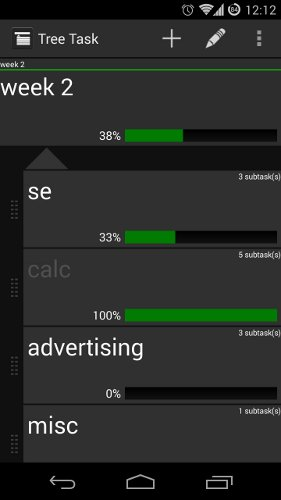

Tree Task is an open source nested task manager for Android
Features
- create nested tasks (like to-do lists inside to-do lists)
- tasks may also be used as notes (50k characters per task description)
- export tasks to any other app (email, text message...)
- archive for finished tasks
- sort tasks in any order you like
- progress tracking by calculating completion of all sub-tasks.
- full tree view mode - visualize the entire tree and jump to any task
Description
Tree Task is a nested task and project management utility that sets itself apart from other task manager and to-do list apps because it is not limited to a linear lists of tasks. Instead, Tree Task allows you to create an infinite number of tasks per list, with an infinite depth of sub-tasks. Sub-tasks are "tasks within a task". Any task that contains sub-tasks acts like a folder for more tasks. If you understand how to organize files and folders on a computer, you will understand how Tree Task works! Tree Task will also track your progress by calculating the average completion of all of the sub-tasks and display it in the parent task, giving you a top-level view of how far along you are on a set of tasks or project via a completion percentage and a progress bar. The user interface is both simple, and highly functional. Tasks are marked as finished and unfinished by simply tapping on them. Parent tasks (like folders) are marked finished only if all of their sub-tasks are marked finished.
You can always know where you are in the tree by looking at the path at the top of the task view. Tree Task is simple enough to make grocery lists, but also offers complex features to track the progress of very large projects making it a versatile and a must have utility for anyone who needs to keep track of things. This version of Tree Task does not contain any ads and will receive updates before the free version does.
Fun Fact
The Icon is created entirely with HTML and CSS and is included in the app source code